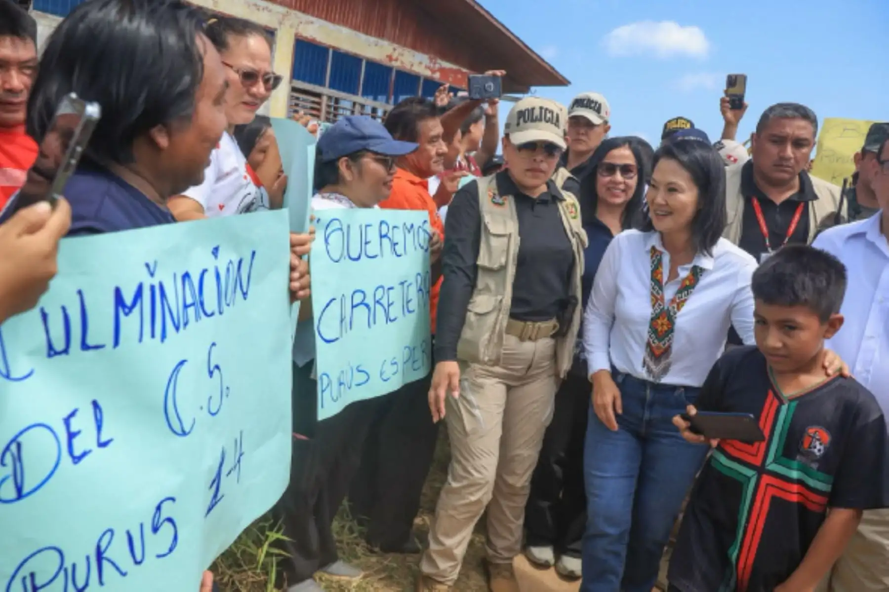

En una importante jornada de trabajo orientada a atender las necesidades de las poblaciones más alejadas del territorio peruano, la presidenta de la república, Keiko Fujimori, arribó a la provincia de Purús, ubicada en la región Ucayali. Durante su visita oficial, la mandataria cumplió con una agenda enfocada en la asistencia social y en la planificación de soluciones a largo plazo para superar el aislamiento histórico que afecta a esta zona de la Amazonía.
La presencia de la jefa de Estado en Purús respondió a un compromiso directo con las comunidades locales, las cuales han venido enfrentando diversas dificultades logísticas y de abastecimiento debido a su difícil acceso geográfico. Como parte fundamental de las actividades programadas, la presidenta entregó ayuda humanitaria destinada a aliviar las necesidades inmediatas de las familias de la provincia.
Atención integral y entrega de ayuda humanitaria
La distribución de la ayuda humanitaria consistió en suministros esenciales para los habitantes de la zona, reforzando la presencia del Estado en una de las fronteras vivas más importantes del país. Las autoridades locales y los pobladores recibieron a la comitiva presidencial, expresando sus principales demandas en materia de salud, educación, transporte y seguridad alimentaria.
Durante la entrega, la mandataria reafirmó que el Gobierno central mantiene una política de puertas abiertas y de atención prioritaria para las regiones que históricamente han permanecido al margen de las grandes inversiones públicas. Asimismo, destacó la labor de las instituciones del Estado que coordinaron el traslado oportuno de los recursos hacia Purús.
Hacia una conectividad definitiva con el resto del país
El punto central del discurso y de los anuncios oficiales en Purús estuvo marcado por la confirmación del inicio de estudios técnicos orientados a lograr la conectividad definitiva de la provincia con el resto del país. El aislamiento geográfico de Purús representa uno de los retos logísticos más complejos de la región Ucayali, requiriendo soluciones de ingeniería y planificación que respeten estrictamente el marco ambiental y legal vigente.
La presidenta Fujimori explicó que estos estudios permitirán evaluar las alternativas más viables y sostenibles para conectar de manera permanente a Purús con la red vial y de comunicaciones nacional. Este anuncio fue recibido con expectativa por los pobladores y líderes locales, quienes reconocen que la integración física y digital es el motor indispensable para dinamizar la economía local, permitir el flujo comercial y garantizar el acceso rápido a servicios médicos especializados.
Con este paso, el Ejecutivo busca sentar las bases técnicas y financieras de un proyecto largamente esperado por generaciones de puruseños. Los equipos especializados del sector público iniciarán las evaluaciones correspondientes en el terreno, articulando esfuerzos con los gobiernos locales y regionales para consolidar una propuesta técnica sólida.
La visita de la presidenta de la república a Purús concluyó con el compromiso de mantener un monitoreo constante sobre el avance de los estudios anunciados y la distribución eficiente de la asistencia estatal, reafirmando que la integración territorial constituye un eje prioritario de la gestión gubernamental actual.